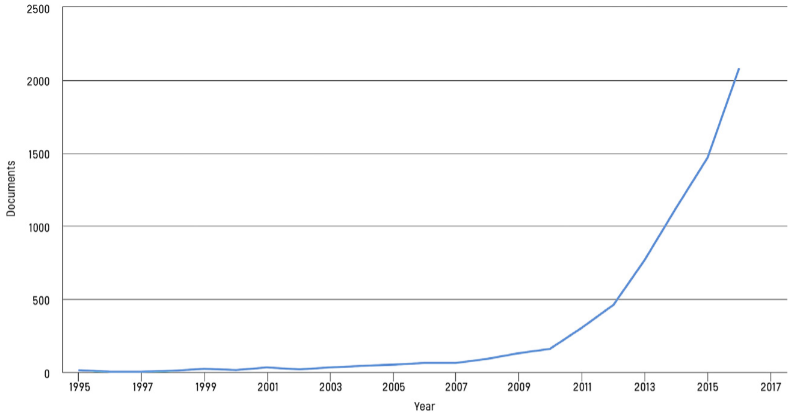

The 2018 revision of the United Nations World Urbanisation Prospects state that 55% of the world population is currently living in urban areas1. This figure is set to increase to 68% by 2050. Now, North America stands as the most urbanised, with 82% of its population living in urban areas. The definition of “smart city” has not been explicitly articulated in the literature with varying suggestions under differing prefixes such as “intelligent”2 and “digital”3. In fact, because of the large number of papers written on the subject, dozens of definitions exist4. The European Commission gives a loose definition and will class a city as “smart” when the information and telecommunication systems are used to improve the efficiency of infrastructure and services to the benefit of its residents and businesses5. Other definitions place emphasis on the Internet of Things (IoT), a network of devices connected to the internet collecting large amounts of urban data to analyse and increase city efficiency6.
The subject of smart cities has become increasingly popular in academia. Figure 1 highlights the increasing number of publications written on the subject in recent years7. With highly skilled graduates, world-leading research and being inherently interdisciplinary, it is clear to see why universities would be particularly proficient at working on the multidisciplinary problems currently facing cities8. A notable example of this is the “Bristol Is Open” project. This is a joint venture between Bristol University and Bristol City Council launched in 2015 to provide a smart city research and development network platform for companies to trial new technology in a real-world environment9. The project has conducted research into the feasibility of air quality analytics using fixed mobile sensors as well as using sensors to monitor the Bristol floating harbour10. The project has also made developments in a city operations centre, which will provide an integrated monitoring of services such as traffic management, telecare and CCTV.

Figure 1:The number of publications including the phrase “smart city”/”smart cities”7
As well as being pursued in academia, smart cities are receiving large amounts of investment within the ICT industries. During the recession, smart cities have been seen as a very promising route for alternative growth11. One example of industry working together with existing cities is IBM’s Smarter Cities Challenge11. IBM will provide several experts to consult and work with a specified city on a current problem that it is facing. A recent example includes Busan in South Korea in which IBM was able to provide a smarter disaster management system by recommending improvements to the information technology, operational technology, infrastructure, governance and citizen engagement12. Whilst IBM promises smarter initiatives and significant economic results, some of the literature has been critical of the charitable and selfless marketing of the project while at the same time being in competition with selling their products13.
Unlike Busan, which was an existing city before IBM’s involvement, Quayside, a 12-acre district on Toronto’s eastern waterfront is hoping to be a new model for smart cities built from the “internet up”14. Sidewalk Labs, sibling of Google and owned by the multinational conglomerate company Alphabet, conceptualized the idea in 2014. The company’s broad vision includes new construction methods using more sustainable materials which will require less energy and reduce landfill waste. Promoting walking, cycling and public transport by only allowing vehicles which are shared or self-driving and creating an underground freight transit system which will also house electric wires, water and waste pipes14. However, by far the most contentious intention of Sidewalk Labs (and with smart cities in general) is the need to capture vast amounts of urban data. On the one hand, this data can be used to improve the services and infrastructure of the city, but people are concerned about privacy and security. Sensors in the district will be in place to collect data on traffic, noise, air quality and the weather. Services that will be monitored include the electric grid, waste collection and waste separation. Some critics have not felt the project is dealing with the issue of public privacy as extensively as it should15.
Because of these legitimate concerns about privacy, much of the literature has been a discussion on who is the beneficiary of such initiatives, whether the large companies augmenting cities with its products or regular citizens being promised healthier, safer and more convenient lives. Hollands’ 2008 paper discusses the idea that information technology alone cannot itself improve the quality of a city, but how this technology is used by the people. It states that a true smart city will use this new smart infrastructure to increase political and democratic engagement16. Other critics have more discernible concerns about the security of a smart city. One of the essential ingredients of a smart city is the interconnectedness of the various systems and infrastructure (for example, combining the power grid with municipal buildings). On the one hand, this would appear to a be a more sophisticated approach, however as the sophistication goes up, the resilience goes down as dependency of the city on each individual component makes it more vulnerable to events such as cyber-attacks, terror attacks and natural disasters7. Thought must also be taken for the subset of the population who are not adept enough or choose not to engage with digital technologies and prevent what Colding’s 2017 paper describes as “digital marginalization”7.
To conclude, due to the unprecedented increase of percentage population living in urban areas, cities are being forced to come up with smarter solutions to current problems. Both in academia, such as the “Bristol Is Open” project working with Bristol city council, and in industry, such as IBM’s Smarter Cities initiative, cities are working to interconnect systems and infrastructure and utilise large amounts of urban data to create smarter, more efficient cities.
References
- United Nations. World Urbanization Prospects: The 2018 Revision.2018.
- Komninos, N. Intelligent Cities: Towards Interactive and Global Innovation Environments. Int. J. Innov. Reg. Dev. 2009, 1 (4), 337.
- Ishida, T. Digital City {Kyoto}: Social Information Infrastructure for Everyday Life. Commun. ACM (CACM 2000, 45, 76–81.
- Ramaprasad, A.; Sánchez-Ortiz, A.; Syn, T. A Unified Definition of a Smart City. 2017, 10428 LNCS, V–VI.
- Editor, D. Digital Agenda for Europe - Netherlands. Digit. Agenda Eur. 2013.
- Zanella, A.; Member, S.; Bui, N.; Castellani, A.; Vangelista, L.; Member, S.; , M. Internet of Things for Smart Cities. 2014, 1 (1), 22–32.
- Colding, J.; Barthel, S. An Urban Ecology Critique on the “Smart City” Model. J. Clean. Prod. 2017, 164, 95–101.
- Ransom, J. Future of Cities: Universities and Cities. 2015.
- Bristol Is Open https://www.bristolisopen.com/overview/ (accessed Nov 12, 2018).
- Bristol Is Open Projects http://www.bristol.ac.uk/engineering/research/smart/projects/bristol-is-open /pilot-projects/ (accessed Nov 12, 2018).
- Paroutis, S.; Bennett, M.; Heracleous, L. A Strategic View on Smart City Technology: The Case of IBM Smarter Cities during a Recession. Technol. Forecast. Soc. Change 2014, 89, 262–272.
- Shen, L.; Farid, H.; Mcpeek, M. A. Busan, South Korea - Smarter Cities Challenge Report. Evolution (N. Y). 2018, 1–14.
- Kitchin, R. Making Sense of Smart Cities: Addressing Present Shortcomings. Cambridge J. Reg. Econ. Soc. 2015, 8 (1), 131–136.
- Sidewalk Labs. Project Vision. City 2017, 196.
- Canon, G. “City of surveillance”: privacy expert quits Toronto’s smart-city project https://www.theguardian.com/world/2018/oct/23/toronto-smart-city-surveillance-ann-cavoukian- resigns-privacy. (accessed Nov 12, 2018).
- Hollands, R. G. Will the Real Smart City Please Stand up? Intelligent, Progressive or Entrepreneurial? City 2008, 12 (3), 303–320.